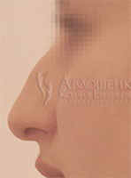

До
 После
После
Ринопластика – хирургическая коррекция носа – позволяет моделировать нос по желанию пациента, создавая (или воссоздавая) правильные пропорции, эстетичную форму и изящный контур.
Виды ринопластики
Все операции, направленные на гармонизацию и улучшение состояния области носа, подразделяются на несколько больших категорий, позволяя решать широкий спектр задач.
- Эстетическая ринопластика направлена исключительно на борьбу с внешними дефектами носа, включает в себя операции по устранению кривизны спинки носа, операции, позволяющие убрать горбинку, уменьшить крылья носа, изменить форму кончика, удлинить или укоротить колумеллу, уменьшить или укоротить нос и т.п.
- Септопластика позволяет скорректировать дефекты внутренних структур носа и восстановить дыхательную функцию, которая может быть нарушена из-за деформации носовой перегородки. Может выполняться одномоментно с эстетической пластикой носа.
- Реконструктивная пластика носа позволяет устранить врожденные дефекты и патологии наружных и внутренних тканей носа, а также восстановить эстетичную форму носа после полученной травмы.
- Повторная ринопластика – комплекс методик, направленных на исправление ошибок неудачно выполненной пластики носа, а также коррекцию осложнений, возникших в послеоперационном периоде по каким-либо причинам.
Подготовка к операции
Качественная подготовка к операции позволит обеспечить качественный результат, поэтому пренебрегать рекомендациями врача для предоперационного периода не рекомендуется.
За две недели до операции пациенту следует отказаться от курения, постараться по возможности перейти на более здоровое питание, прекратить прием некоторых лекарственных препаратов. Обычно имеются в виду препараты, влияющие на свертываемость крови, однако для получения более точных рекомендаций необходимо проконсультироваться с врачом.
На этапе подготовки к операции также составляется план вмешательства, проходит обсуждение и осуществляется моделирование формы и размеров будущего носа. Институт пластической хирургии и косметологии предлагает моделирование результата с использованием самых современных технологий 3D-моделирования: специальная компьютерная программа позволяет в точности воспроизвести предполагаемый результат, облегчая принятие решения пациенту и работу хирургу.
Методики выполнения ринопластики
Несмотря на ограниченность области вмешательства, ринопластика считается одной из наиболее сложных операций, а потому выполняется исключительно под общим наркозом и занимает в среднем около двух часов. В ходе операции работа ведется не только с мягкими тканями, но также с костной и хрящевой тканью; по необходимости могут использоваться собственные хрящи пациента и искусственные материалы для трансплантации (обычно для проведения реконструктивной пластики).
Пластика может выполняться классическим – открытым – методом, либо более щадящим – закрытым. Открытая пластика подразумевает обширную мобилизацию тканей через наружные разрезы в области колумеллы либо в одной из естественных складок кожи. Закрытая пластика носа позволяет минимально травмировать ткани: процедура проводится через носовые ходы и не требует выполнения полноценных разрезов за счет использования специального оборудования и инструментов.
Открытая пластика проводится тогда, когда предполагаемый объем вмешательства слишком велик, и закрытый метод не позволяет хирургу добраться до участка, требующего коррекции.
Разрезы после пластики носа ушиваются максимально незаметными косметическими швами, впоследствии перестают быть хоть сколько-нибудь заметными.
Реабилитация после ринопластики
Время восстановления после операции очень сильно зависит от того, какая именно процедура была проведена. Если выполнялась простая коррекция кончика носа, хватит пары недель на то, чтобы ткани полностью зажили, и результат можно было оценить; если пациент перенес серьезную открытую пластику носа в сочетании с реконструкцией или септопластикой, на восстановление может понадобиться и месяц, и даже больше.
Общими рекомендациями для послеоперационного периода в данном случае являются:
- отказ от физических нагрузок;
- отказ от посещения сауны, солярия, бани и пляжа;
- отказ от пребывания на солнце;
- ограничение ношения очков;
- ношение специальной гипсовой лангеты в течение нескольких дней после операции.
С первого дня для ускорения восстановления может быть назначено комплексное медикаментозное и физиотерапевтическое лечение.
Предварительный результат ринопластики формируется в течение 1-2 месяцев, окончательный – после полного рассасывания отека и укрепления тканей в новом положении – примерно через полгода.